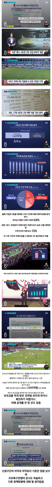

'프로' 맞나.. 시도민 구단 수입 64%가 '세금'.jpg
댓글
구자욱 세금으로 거기다 대구fc는 2부리그 세징야 연봉 21억 ㅋ
세금리그 없애고 기업구단 리그로 재편해야지
1-2부 승강제만 유지하고, 나머진 다 세금지원 없애버려
김보복이 난폭운전 하는거보면 화가 치민다
애들교육이랑 노인복지에 써라
야구는 자체이익으로 세금도아니고 모기업의 지원마저 줄이는 마법 ㅋㅋㅋㅋ
다 끊어라 뭐하는 짓이냐 이게
다 끊어야돼 왜 공놀이를 세금으로함?
준공무원이네
보는사람도 없는거 왜 세금으로해야함 ㅋㅋ
1500억을 ㅅㅂ 저딴데 쓰고있네
야구는 임대료+광고판 사용료 다 떼간다 ㅠㅜ
그래서 삼성 라이온즈한테 삥 뜯어서 대구fc 세징야 연봉 대준다는 말도 나올 정도 ㅜㅜ